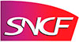

Work Experience
Capgemini Financial Services - Software Engineer
Crédit Agricole Insurance July 2011 - Date
C#, Spring, Javascript, CSS, IIS, Oracle
Redesign workstations for Credit Agricole insurance. Integration of a web-based CRM solution for 400 users.
- Technical manager of an application scope
- Implemented in C# a batch wich synchronise an AS400 with our front app on daily basis
- Mentoring young developers
- Design and development of new features
Project size (around) : 2 000 man days
Banque De France September 2010 - July 2011
Java, Spring, Hibernate, Javascript, CSS, IIS, Oracle
Management application for orders and remittances.
The application exposes an extranet and web services to banks and cash carriers.
Mission : Ensure application quality and delivery schedule.
Development of new features and optimization of application performance.
- Feature development and bug fixes
- Qualification script writing and creation of associated data sets.
- Execution of qualification test
- Execution of tests with the Banque de France project owner team.
Project size (around) : 2 000 man days
French Startup - Designing an exchange platform March 2010 - June 2010
Mindjet
As part of a final project study,
needs analysis, helping with the business model and implementation of a Proof of Concept
- Analysis of customer needs
- Writing a state of the art
- Writing a detailed technical specifications of the exchange platform and interfaces.
SNCF - Design and Integration of an Electronic Document Management January 2010 - March 2010
VB.NET, ASP, IIS, Oracle

As part of a final project study,
design and integration of an Electronic Document Management for
the renovation of RER B trains. The renovation is carried out on two French sites.
- Modification of existing specifications corresponding to changing customer needs.
- Web application development using AGILE methods.
- Application integration in the production environment.
Logica - Maintenance of LU France EAM and CMMS July 2009 - December 2009
AS400, Coswin
As part of my end of study, primary contact for 400 users across nine plants.
- Ensure the proper functioning of the application scope
- Capitalizing knowledge of problem resolution
- Writing specifications for new developments
- Development of new features
Education
2010 - Graduated by a French Graduate School of Engineering (ICAM)

A five-year Engineer training including the following subjects: Applied Maths and Physics,
Construction, Manufacturing Technologies, Fluid Mechanics, Computer Sciences,
Automation, Materials, Management, Foreign Languages and Humanities.
2005 - French Baccalauréat in Sciences with honors
Specialization in mathematics (equivalent of high school graduation with “A level” in scientific subjects)
2002 - B.I.A
French diploma of initiation of aeronautic
Accomplishments
Fluent English and some knowledge of Spanish
English : Good Level (8 years of study). First Certificate Of Cambridge in June 2006. Toeic : 915
French : Mother tongue.
Spanish : Satisfactory working knowledge and comprehension (3 years of study).
The taste of teamwork : Organizational skills, rigor and management details
President of RobotIcam Nantes in 2009
Management of a 15 people team. Design of a robot to attend the France Cup of Robotics 2009.
Human and technical problems managements.
Result : 30th on 187 participants.
President of Yeurmender, a humanitarian association for the Senegal in 2007
Managed a 7 student team and raise 10,000€ to finance a tractor’s purchase.
Travel in Senegal for a month to implement this project.
Facilities to accommodate and awareness of the realities
Numerous and frequent trips to Europe and North America.
4 month trip in Australia.
Also
Photograhie and piano passionate.
Regular swimming and jogging.